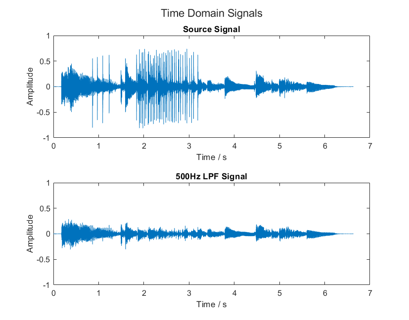
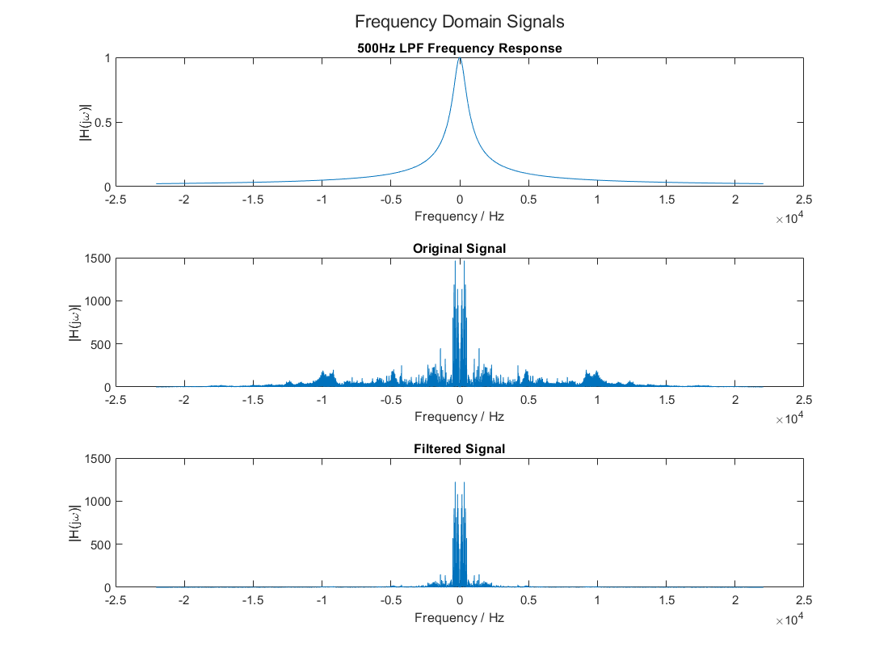
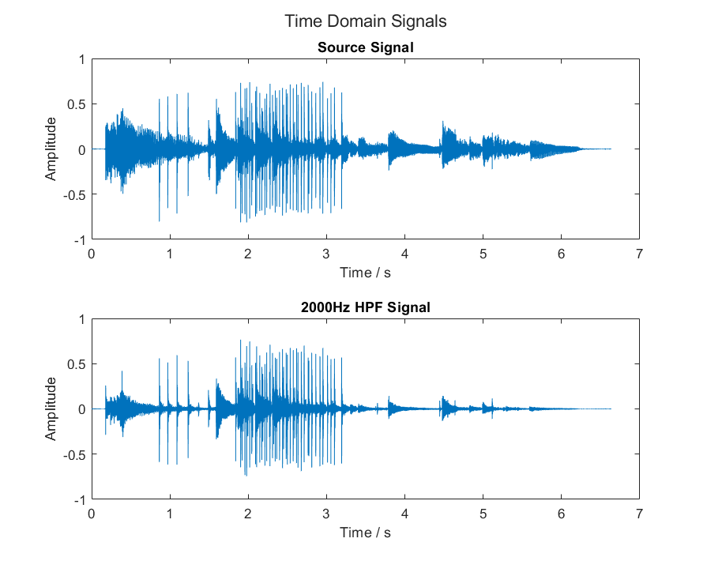
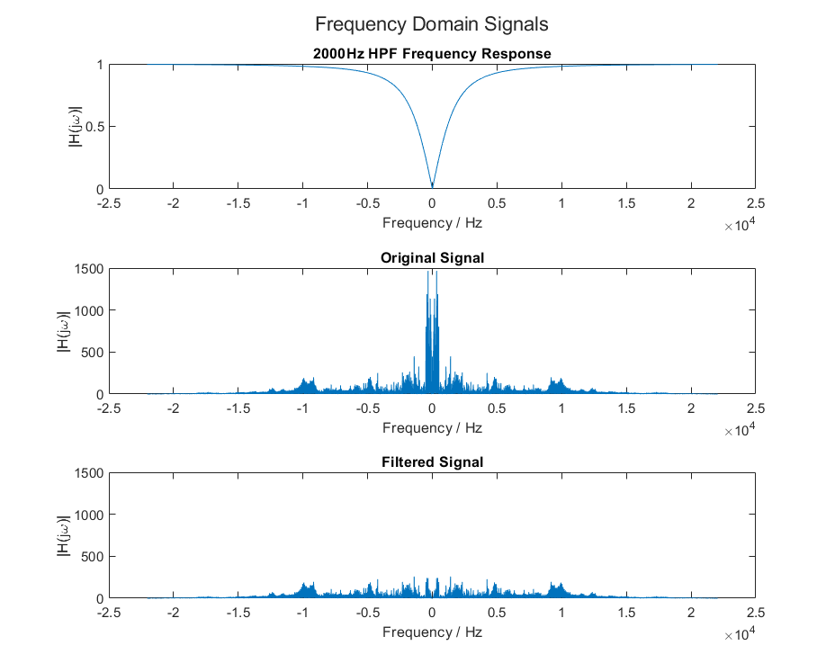
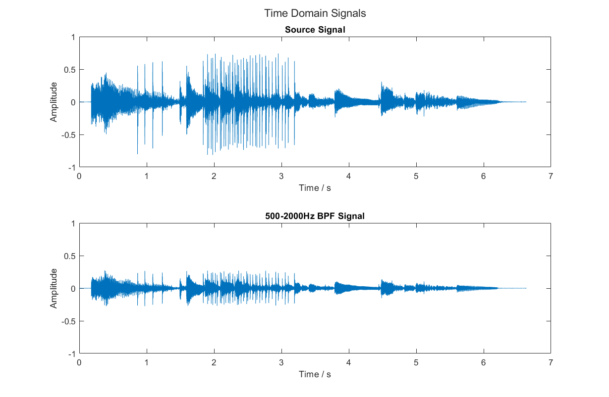
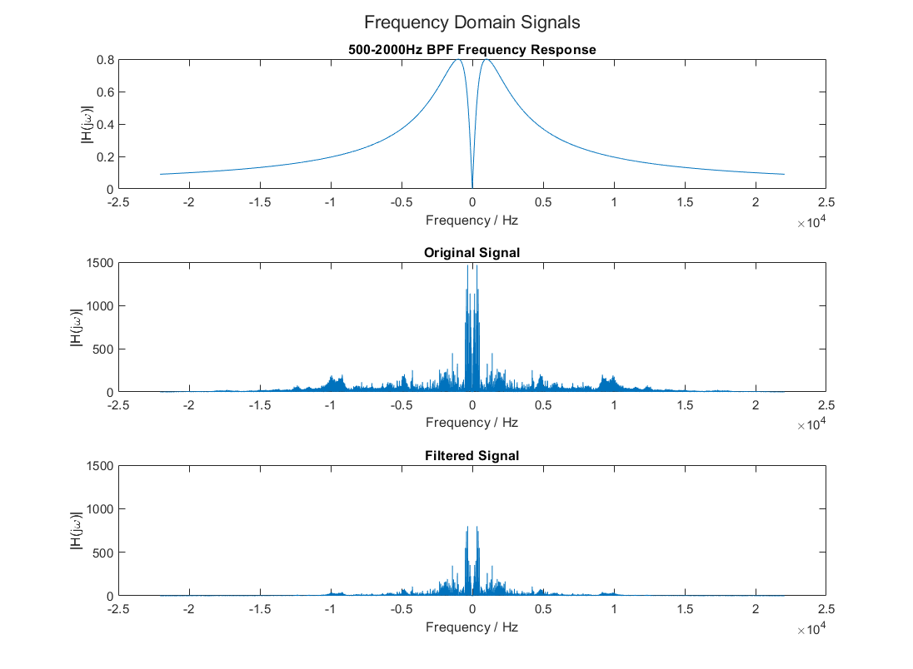

In this lab, we used the fourier transform of a signal to filter it. We observed how low pass, high pass, and band pass filters affect the signal. We listened to the difference in sound and observed the change in the time and frequency domain plots.
We used Fourier Transform to analyze a sound signal. We multiplied the signal spectrum with $\frac{500}{500 + j \cdot \omega}$ to run it through a low pass filter (LPF). We then used the inverse fourier transform to synthesize the new signal.
The filtered signal sounds quieter and duller than the original signal. It sounds muffled, and most or all “sharp” qualities of the noise have been taken away.
Visually, the filtered time-domain signal is clearly missing some high frequency components between times 2 and 3. The filtered frequency-domain signal lost all its higher frequency values.


We modularized loading the data, filtering, plotting, and playing the sound. First, we load the data:
Second, we run the filtering logic:
Third, we plot the results:
Finally, we play the sounds:
We repeated Exercise 1, but with a high pass filter (HPF). The HPF makes the signal sound sharp, but far away.
Visually, the time-domain filtered signal lost what seems like a DC component part of the signal. For example, from 0 to 1 seconds, the filtered signal has lower average amplitudes even though it seems to have the same maximum amplitude. This is likely what they call bass.
The frequency domain filtered signal clearly lost its lower frequency values. The two towers next to the 0 are gone. But the higher frequency values remain unchanged.


We combined exercises 1 and 2 to make a band pass filter (BPF). This signal didn’t sound significantly different from the original signal.
Visually, the filtered time-domain signal retained its form, But has become weaker. It lost some of its bass components just like the HPF, but its high frequency components from seconds 1 to 2 became weaker as well. As expected, it looks like a combination of the LPF and HPF
The frequency-domain signal lost its highest frequency components. The lower frequency components (the two towers) became much weaker.


Because of the properties of the Fourier Transform, filters can be implemented by performing a reverse Fourier transform on the product of the FTT of a signal and a filter’s frequency response. This has the same effect as convolving the original signal with the impulse response, and the process is straightforward and effective.
The effect of filters is easy to notice in both the time and frequency domains.